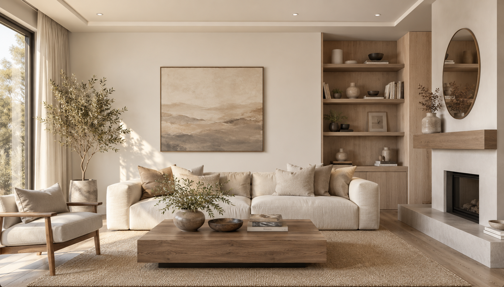
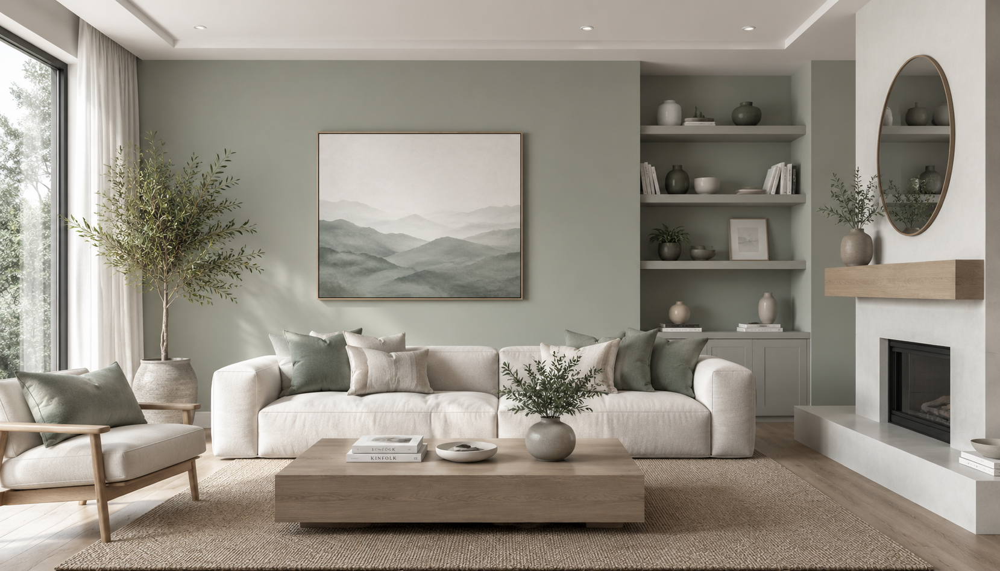
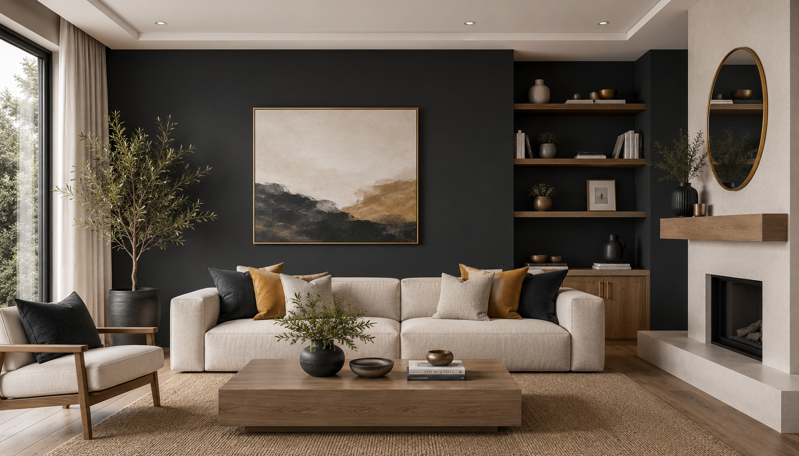
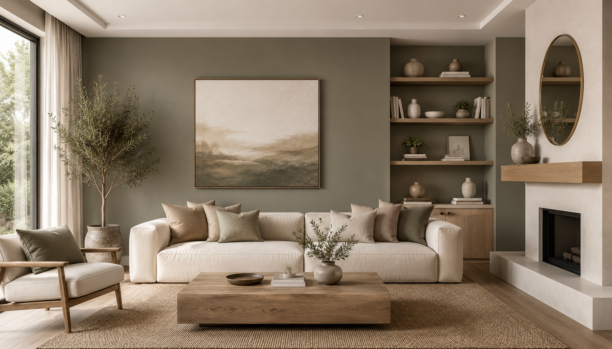

01
Color
Find colors that suit the room, architecture and personal style.
↗

Support with color, surface and material selection — tailored to the architecture, usage and personal style.
Light, architecture, materials and colors work together. The right combination can change how a room feels, how surfaces interact and how the entire space is experienced.
Our goal is to help you choose solutions that look right today and continue to work over time.

From the first color idea to the final coating system, we help connect visual preference with practical requirements.
Find colors that suit the room, architecture and personal style.

Choose the right visual and tactile surface effect.

Select suitable materials for the specific application.

Choose an appropriate coating system based on the surface and its use.
Explore different color directions and see how a single change can transform the atmosphere of a space.

A soft, timeless tone that keeps the room bright and calm.

Clean and refined for a calm contemporary appearance.

A subtle surface character that adds depth without overwhelming the room.

A soft, understated finish with a sophisticated visual quality.

Explore how different materials and surfaces interact with color.

A modern surface direction selected around the architecture and use.
A clear process helps turn preferences, architecture and practical requirements into a considered solution.
Understand your requirements, preferences and personal style.

Consider the architecture, proportions, existing materials and available light.

Develop suitable color, surface and material combinations for the space.

Choose the appropriate final solution and coating system before implementation.

Explore curated combinations and see how different tones can work together within the same interior.




Color should not be selected in isolation. Architecture, light, materials and long-term suitability all influence the result.
Colors matched to the building, room proportions and architectural character.
Consider how natural and artificial light affect the way a color is perceived.
Select materials and surfaces that work appropriately with the chosen color direction.
Choose solutions designed to remain suitable beyond current trends.
Let's discuss your project and find a combination that fits your space, architecture and personal style.